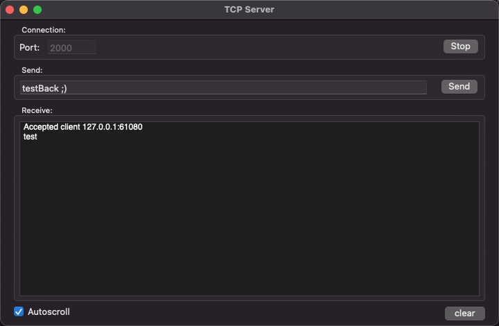

A simple Mac app to host a TCP server and send and receive text messages.

Listen on a port, accept clients, and exchange text messages. A quick way to test clients and embedded devices.
Free and open source. View on GitHub. Also see TCP Client.